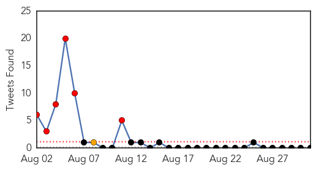
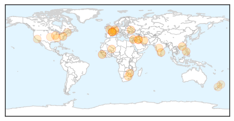
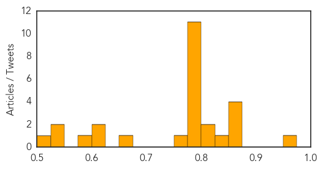
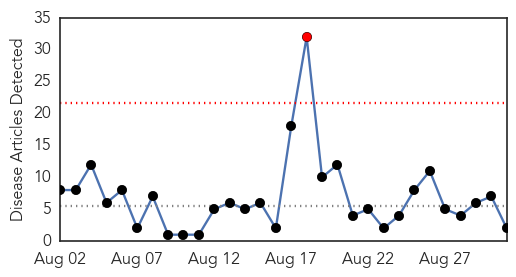
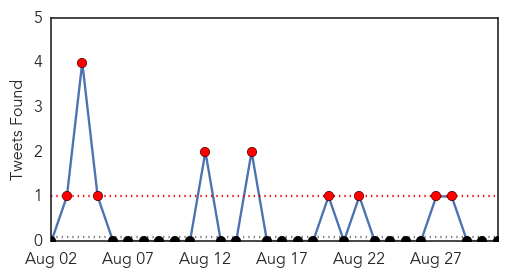

Unknown
30-Day Web Trend
1 alerts, 0 warnings

30-Day Twitter Trend
5 alerts, 0 warnings

Article Locations
Article Confidences
Top Articles:
- 0.956
- Ebola epidemic decimating health workers in Guinea
- 0.866
- Iraqi forces, militias enter besieged northern town -officials
- 0.866
- Russia and Ukraine hand back prisoners
- 0.866
- U.S. applauds European steps towards more Russia sanctions
- 0.866
- Syrian women work in a tomato field in Marjaoun village near the Israeli border in south Lebanon
- 0.836
- Deadly Dog Virus on the Prowl, Don't take it Easy if Your Pet is Under the Weather
- 0.811
- Zimbabwe's Infant, Maternal Mortality Rates Drop
- 0.811
- Zimbabwe's Infant, Maternal Mortality Rates Drop
- 0.794
- Inside Novoazovsk – the pro-Russians' latest conquest
- 0.794
- UK boy with brain tumour found in Spain, parents held
- 0.794
- Putin calls for talks on 'statehood' for east Ukraine
- 0.794
- Tension rises in Hong Kong as Beijing rejects open elections
- 0.794
- Confusion reigns after Lesotho 'coup'
- 0.794
- Kidnapped Yazidi women 'sold to Islamists' in Syria
- 0.794
- French PM vows to safeguard 35-hour work week
- 0.794
- Filipino UN troops escape Islamists in Golan Heights
- 0.794
- EU mulls Russia sanctions as Kiev warns of 'full-scale war'
- 0.794
- Fugitive British killer returns to French psychiatric hospital
- 0.794
- Algerian diplomats held by Islamists are freed in Mali
- 0.765
- Pet Talk: Evaluating risks
- 0.651
- Water-borne diseases spreading in Manda, Koraon blocks
- 0.614
- Five Ways Summer's Heat Brought Hazardous Beach, Lake Conditions
- 0.611
- Mosquito pool in York tests positive for EEE — Portland — Bangor Daily News — BDN Maine
- 0.591
- Overuse of antibiotics puts hospitals, patients at risk
- 0.547
- Curb anaemia deaths in Mussoorie Harsh Vardhan to officials
- 0.525
- Study on causes of rheumatic fever gets underway in Auckland
- 0.520
- Study on causes of rheumatic fever gets underway in Auckland
Top Tweets:
- 0.503
- Cumbre de Presidentes del Mercosur será en Entre Ríos: El gobernador de Entre Ríos, Sergio Urribarri, anunció ... http://t.co/mHg2oY9BOz
Cholera
30-Day Web Trend
1 alerts, 0 warnings

30-Day Twitter Trend
6 alerts, 0 warnings

Article Locations
Article Confidences

Top Articles:
Top Tweets:
-
No tweets found for Aug 31, 2014